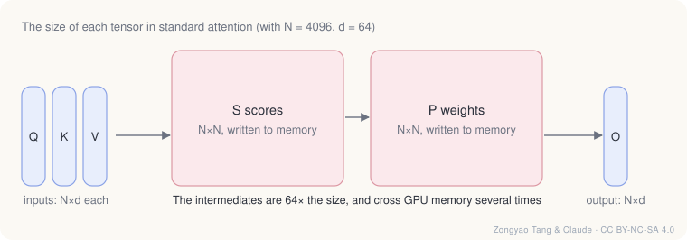
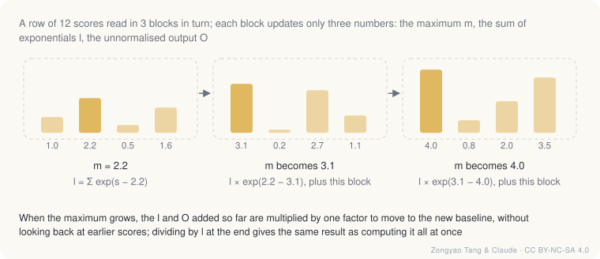
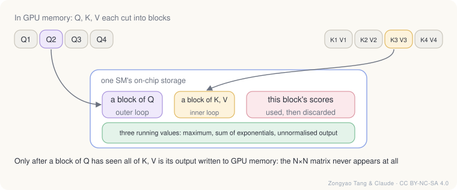

The thread: standard attention is slow not because of the amount of arithmetic but because of several memory reads and writes of N×N size → to avoid writing out that N×N matrix, softmax has to be computable "block by block", and online softmax achieves this → combine it with tiling and recomputation, and you have Flash Attention. This unit is where three lines meet: attention from 1.4, tiling from 3.3, reduction from 3.5.
Part 4 · Operators and kernels4.4 Flash Attention
Translated by AI (Anthropic's Claude) from the Chinese edition. The Chinese original is the reference.
This unit answersWhere exactly is the bottleneck of attention? How can it be several times faster while "computing just as much"?
Follows attention in 1.4, reduction in 3.5 and tiling in 3.3: the three meet here.
- Standard attention is slow in reading and writing, not in computing
- Online softmax: correct without seeing the whole row
- Tiling + recomputation: compute a little more, move a lot less
Explanation
1Standard attention is slow in reading and writing, not in computing
The standard implementation first computes the N×N score matrix and writes it back to memory, then reads it out to do softmax and writes it back, then reads it out to multiply by V. As sequences get longer, these several N²-sized reads and writes become the main cost, and memory use also grows with N².
The steps of the standard implementation. Let the sequence length be N and each head's dimension d.
- S = Q × Kᵀ: gives the N×N score matrix, written back to memory.
- P = softmax(S): read S out, do softmax row by row, write the N×N P back to memory.
- O = P × V: read P out, multiply by V, giving the N×d output.
(Masking and dropout in between each read and write the N×N matrix once more.)
Compare the sizes. The inputs Q, K, V and the output O are all N×d. The intermediate S and P are N×N. At N = 4096 and d = 64, N×N is 64 times N×d. In other words, the inputs and outputs that matter are very little data, while the intermediate results are dozens of times larger and go in and out of memory several times.

The sizes compared by area (illustrative) Why this is the bottleneck. The FlashAttention paper gives numbers that show the gap: an A100's memory is tens of GB with a bandwidth of about 1.5–2 TB/s; the on-chip storage on each SM is only 192 KB, but its bandwidth is estimated at about 19 TB/s. On chip is an order of magnitude faster, but much smaller. The standard implementation sends the N×N intermediate matrix entirely down the slow road through memory. softmax itself does very little arithmetic and is typically bandwidth-bound (the table in 4.1); so the time of the whole of attention is dominated by these few N²-sized reads and writes.
Memory use is N² too. Both S and P have to be stored; in training, P must also be kept for the backward pass (2.2). Double the sequence length and this memory becomes four times as large. Before Flash Attention, this was the main factor limiting context length.
Why earlier ideas did not work well. Many works tried to reduce the arithmetic of attention: approximations that compute only some of the pairs of positions. The paper points out at the start that these methods lowered the theoretical computational complexity, yet actual run time often did not fall to match, because they did not target the real bottleneck.
Flash Attention starts from the opposite end: not a single operation less (even slightly more), only fewer memory reads and writes. The paper calls this an "IO-aware" algorithm. It is the most convincing example of "first ask what it is waiting for" from 0.1: optimising something that is not the bottleneck is useless, however elegant.
An analogyLike copying: first transcribe a huge intermediate table onto the blackboard, then copy it back cell by cell, when the table is not needed in the end at all.
So reducing memory reads and writes (being IO-aware) matters more than reducing arithmetic: Flash Attention even does slightly more arithmetic, yet is several times faster.
Builds on Arithmetic intensity: how many operations per byte movedAttention is a "soft" table lookupSourcesCUDA for LLMs chapter 8: the intermediate matrix has to be written back to HBMCUDA for LLMs chapter 8: the core ideaFlashAttention paper, page 1, abstract: attention algorithms should be IO-awareFlashAttention paper, page 3, §2.1: the bandwidth gap between GPU memory and on-chip storageFlashAttention paper, page 4: memory accesses of standard attention- To keep the N×N matrix from ever touching memory, it has to be processed block by block. But softmax needs to see a whole row before it can normalise. This is the first difficulty to solve.
2Online softmax: correct without seeing the whole row
softmax needs the row's maximum and its sum of exponentials. The online algorithm keeps "the maximum so far m" and "the sum of exponentials so far l" as it reads: when a larger value appears, it multiplies the sum accumulated so far by exp(old m − new m) to correct it, then goes on accumulating. The output is corrected by the same factor.
The definition of softmax. For a row of scores s₁…s_N, output i is exp(sᵢ) ÷ Σⱼ exp(sⱼ). The denominator needs all the scores. In real computation, to keep exp from overflowing, the row's maximum m is subtracted first: exp(sᵢ − m) ÷ Σⱼ exp(sⱼ − m). The result is the same, but there is now one more quantity that "needs the whole row to be known".
Think of a row in two blocks. Suppose you have seen the first half of the scores and computed their maximum m₁ and sum of exponentials l₁ = Σ exp(sⱼ − m₁). Now the second half arrives, with maximum m₂.
- The whole row's maximum: m = max(m₁, m₂).
- The first half's sum of exponentials was computed against the base m₁; now the base is m. Since exp(s − m) = exp(s − m₁) × exp(m₁ − m), multiplying l₁ by one factor exp(m₁ − m) converts it to the new base. There is no need to go back and look at each score of the first half again.
- The second half's sum of exponentials is computed against m directly and added on: l = l₁ × exp(m₁ − m) + Σ_second half exp(sⱼ − m).
That is the whole trick: changing the base of a sum of exponentials takes just one multiplication. So scores can be read in block by block, keeping only two numbers (the current maximum m and the current sum of exponentials l), updated once per block.
The output can be accumulated the same way. What attention finally needs is not softmax's result itself but the weighted sum after multiplying by V, O = Σⱼ pⱼ vⱼ. Same reasoning: do not divide by the denominator yet; accumulate "the unnormalised weighted sum" Σ exp(sⱼ − m) vⱼ; each time the maximum is updated, multiply what has been accumulated by the same correction factor; after all blocks are processed, divide by the final l.

Scores read in block by block: when the maximum changes, multiply what has been added up so far by one factor to move it to the new base Its relation to 3.5. 3.5's discussion of parallel reduction had a thread: many computations that seem to have to be done "in order from start to end" can, once the right intermediate state is found, be split into a form that can be done in segments and merged. The intermediate state of a sum is a partial sum; here it is the three things (maximum, sum of exponentials, unnormalised output), and the rule for merging two segments is the change-of-base formula above. Online softmax is the "segmentable" form of softmax.
Numerically. The result is mathematically identical to computing it in one go, differing only in the last few digits from floating-point rounding (the normal error of 4.1). So Flash Attention is exact attention, not an approximation.
Hands-on: checking online softmax with a few lines of Python
The code below splits a row of scores into several blocks, computes "the weighted sum over v after softmax" the online way, and compares it with computing it in one go. It runs directly in the interpreter.
import torch torch.manual_seed(0) s = torch.randn(1000) * 5 # one row of scores v = torch.randn(1000) # the value at each position # in one go ref = (torch.softmax(s, dim=0) * v).sum() # online: look at only 100 at a time m = torch.tensor(float("-inf")) # the maximum so far l = torch.tensor(0.0) # the sum of exponentials so far (against base m) o = torch.tensor(0.0) # the unnormalised weighted sum so far for i in range(0, 1000, 100): sb, vb = s[i:i+100], v[i:i+100] m_new = torch.maximum(m, sb.max()) scale = torch.exp(m - m_new) # the factor that moves old results to the new base p = torch.exp(sb - m_new) # this block's exponentials against the new base l = l * scale + p.sum() o = o * scale + (p * vb).sum() m = m_new print(ref.item(), (o / l).item()) # the two numbers should differ only in the last digitsThings to try changing:
- Change the block size from 100 to 1 or 1000: the result does not change. Block size affects only efficiency, not correctness.
- Remove the
scaleterm: the result is wrong, clearly so. This shows the change of base is essential. - Change the scores' magnitude from 5 to 500.
torch.softmax, computing in one go, subtracts the maximum internally and does not overflow; the online version, always measured against the current maximum, does not overflow either.
In the Flash Attention kernel, each round of this loop handles not a segment of one row but "one block of Q against one block of K and V", with m, l and o as per-row vectors; the logic is exactly the same as these dozen lines.
An analogyLike keeping accounts in a base currency: when the base currency changes, the total so far converts with one exchange rate, without recalculating every entry.
So attention can be computed block by block over K and V, with each block's intermediate results kept in shared memory and registers, never needing the full N×N matrix.
SourcesCUDA for LLMs chapter 8: rescaling the running sumsCUDA for LLMs chapter 8: implementationFlashAttention paper, page 5: computing softmax and its statistics block by blockOnline normalizer calculation for softmax (the origin of online softmax)- With online softmax, attention can be computed in blocks. What remains is fitting it onto the GPU's memory hierarchy, and making the backward pass not need the N×N matrix either.
3Tiling + recomputation: compute a little more, move a lot less
In the forward pass, a block of Q stays on chip while the blocks of K and V are read in one after another and thrown away after use; only per-row statistics (the maximum and the sum of exponentials) are saved. The backward pass does not read a stored attention matrix but uses these statistics to recompute the block it needs.
The forward pass. Cut Q into several blocks, and K and V into several blocks too. The block size is chosen so that "one block of Q, one block of K, one block of V and their intermediate results just fit into the on-chip storage of one SM".
- The outer loop: take a block of Q and read it into on-chip storage. Prepare the three accumulators of online softmax (maximum, sum of exponentials, unnormalised output) for each row of this block.
- The inner loop: take each block of K and V in turn and read it into on-chip storage. Compute the scores of this block of Q against this block of K (a small matrix multiplication), and update the three accumulators by the rules of the previous card. This small block of scores is thrown away after use.
- When the inner loop ends: every row of this block of Q has seen all of K and V. Divide the output by the sum of exponentials and write it back to memory. Also combine each row's maximum and sum of exponentials into one number (their log-sum) and store it for the backward pass.

The outer loop takes a block of Q; the inner loop takes each block of K and V in turn (This is the structure of Algorithm 1 in the paper; in actual implementations the inner and outer loops can be swapped, and the second version of Flash Attention changed the order of the loops for better parallelism.)
How much is read and written. The inputs Q, K and V are read from memory, the output O written back, plus one statistic per row. The N×N score matrix and probability matrix never appear in memory from start to finish; they appear and disappear block by small block in on-chip storage. The paper proves that the number of memory accesses drops from the standard way's "proportional to N²", by a factor that depends on how large a block the on-chip storage can hold. The extra memory use goes from N² to N.
The arithmetic is not reduced: the score of every pair of positions is still computed once.
The backward pass. As 2.2 explained, autograd saves the forward pass's intermediate results for the backward pass. Done that way, the N×N probability matrix would have to be saved, and all the effort above would be wasted.
Flash Attention defines its own backward pass (the custom
autograd.Functionmentioned in 2.2):- The forward pass saves only the output O and that per-row statistic, both of size N.
- The backward pass runs the same tiled loop again: read in a block of Q and a block of K, recompute this small block of scores; with the saved statistics, this small block's probabilities follow directly, without the online accumulation again; use them to compute the contributions to the gradients of Q, K and V, accumulate them; throw this small block away.
The backward pass does the "Q times Kᵀ" computation once more. But 4.2 discussed this trade: what is recomputed is a small matrix multiplication on chip, and what is saved is N²-sized memory reads and writes; for a bandwidth-bound operation, that is a bargain. The paper reports: despite more arithmetic, actual run time is clearly shorter.
Three ideas meet.
- Tiling: move data close and use it many times (3.3).
- Online softmax: split a reduction into a segmentable form (3.5).
- Recomputation: trade computation for memory (2.2, 4.2).
None of them is new on its own; together they solved a problem that had long held context lengths back. Ring Attention in 7.3 takes the same set of methods from "the levels of storage within one chip" to "across many GPUs".
An analogyLike not taking your scrap paper home after an exam: when you need a step, working it out again is easier than keeping a big pile of scrap paper.
So memory use goes from growing with N² to growing with N, which is what made long contexts possible; the idea of "recomputation in exchange for memory" is everywhere in training too (activation checkpointing).
Builds on Tiling: move one small block into shared memory at a time, and let everyone reuse itBackpropagation = the chain rule + bookkeepingSourcesCUDA for LLMs chapter 8: tiling and recomputationLecture 12 code: flash_attention.cuFlashAttention paper, page 4, §3.1: tiling and recomputationFlashAttention paper, page 5: algorithm 1 and theorem 1FlashAttention paper, page 6, theorem 2: the number of memory accessesFlashAttention paper, page 2, figure 1: tiling illustrated, and the speed-up
Putting it together
Standard attention is slow in its reads and writes: the N×N intermediate matrix goes in and out of memory several times. Online softmax lets each row be computed in blocks, correcting as it goes. Flash Attention reads K and V in blocks into on-chip storage, throws each away after use, and keeps only two statistics per row; the backward pass recomputes what it needs from them. Memory goes from growing with N² to growing with N.
Test yourself
Without looking back at the explanation, say it in your own words.
- Where is the standard implementation of attention slow? Why is its bottleneck reading and writing rather than computing?
- How does online softmax manage to "start computing after seeing only part of the data, and still be right in the end"?
- How is Flash Attention's forward pass tiled? Without a saved attention matrix, how are the gradients computed in the backward pass?